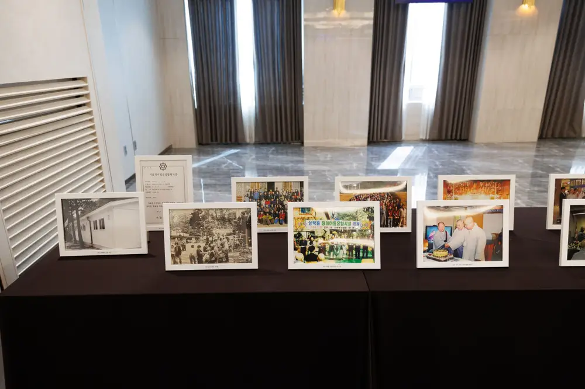
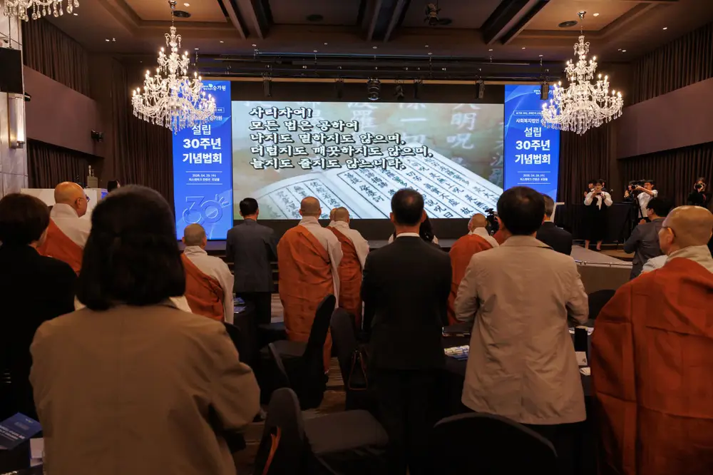
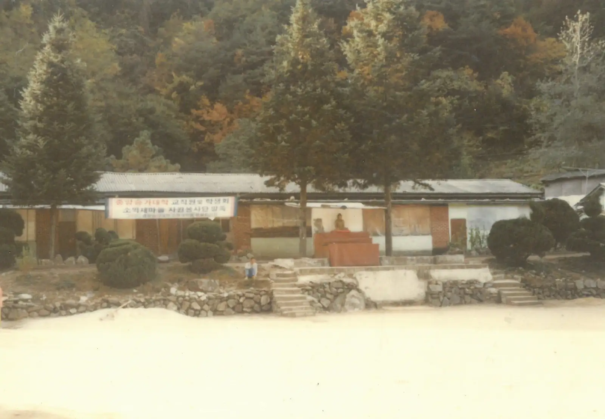

승가원 설립 30주년 디지털 역사관
함께 이루리희망 피우리
1987년 작은 폐교에서 시작해 설립 30주년을 맞은 승가원의 걸음을, 사진과 영상과 숫자로 펼쳐 봅니다.
승가원 디지털 역사관을 열며
서른 해 동안 쌓인  
승가원이 걸어온 길을 한곳에 모은 디지털 역사관입니다. 장애가족 곁에서 인식을 바꾸고 자립을 도운 날들의 어제와 오늘, 그리고 내일을 기록으로 나누려고 만들었습니다.
30 YEARS IN NUMBERS
숫자로 읽는 30년
쌓인 후원만큼 장애가족의 일상도 든든해졌습니다.
1,645억
누적 세입
1,485억
누적 후원금 수입
32명
자립 성공 장애가족
702기관
장애바로알기 교육 기관
1,575회
장애바로알기 교육 횟수
145,880명
장애바로알기 교육 대상자
FOUR ERAS
네 시대를 따라 걷다
카드를 옆으로 밀어 네 시대를 차례로 만나 보세요.
FAMILIES
가족들이 들려주는 이야기
자립, 근무, 후원. 세 가족의 영상 이야기와 역대 이사장 인터뷰 요약을 담았습니다.
30TH FILM
설립 30주년 기념영상
승가원이 걸어온 시간을 담은 설립 30주년 기념영상입니다.
ARCHIVE
기록은 지금도 쌓이는 중
마우스를 올리면 한 칸이 넓게 열립니다.

NEXT 30 YEARS
다음 서른 해를 향해
기념영상, 엠블럼, 기념법회 사진을 30주년 페이지에 모아 두었습니다.
30주년 보러 가기